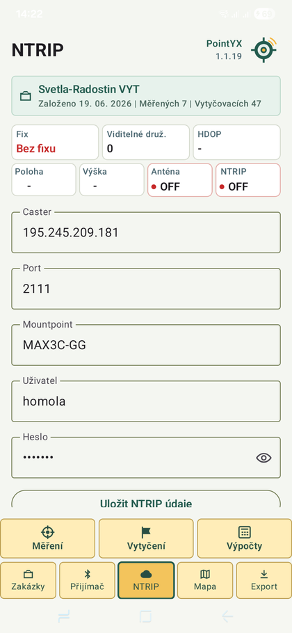
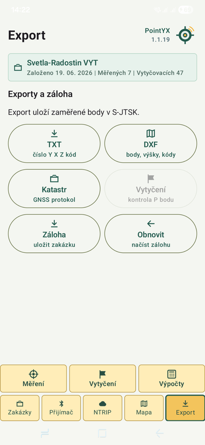
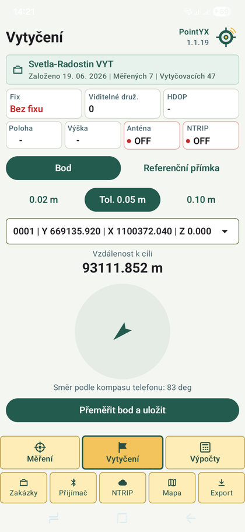
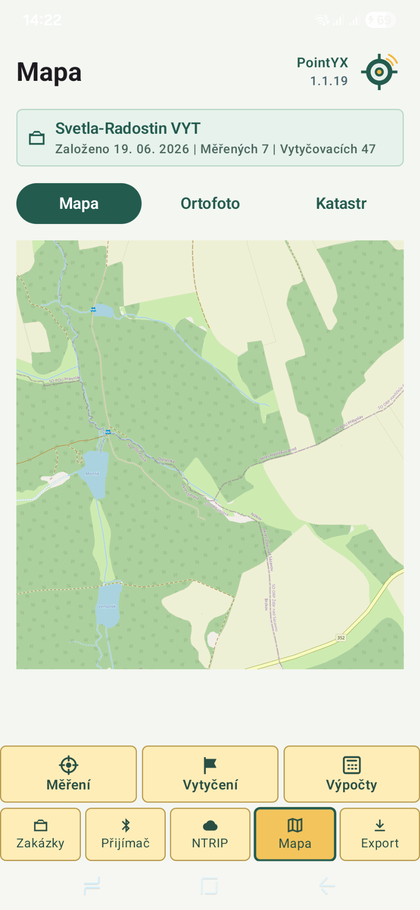
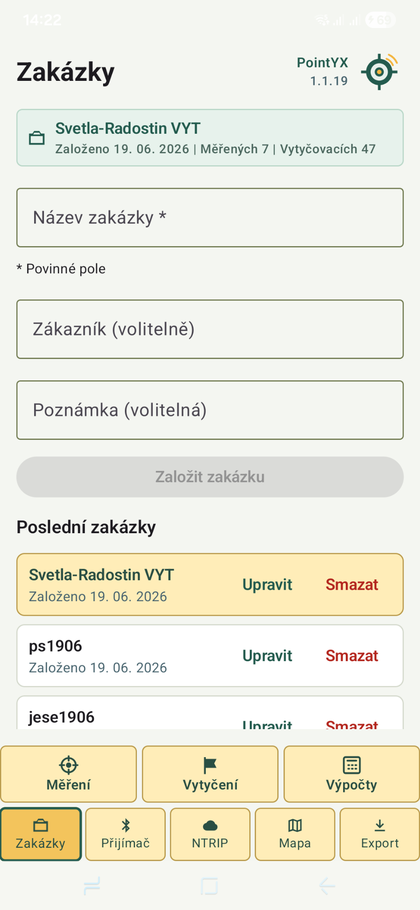

Měření bodů
Ukládání bodů, kódů, výšek a kontrola stavu fixu na jedné obrazovce.
PointYX spojuje Bluetooth přijímač, RTK korekce, NTRIP, měření bodů, vytyčování a export dat v jedné čisté aplikaci pro Android.
Ukládání bodů, kódů, výšek a kontrola stavu fixu na jedné obrazovce.
Směr, vzdálenost k cíli a tolerance v přehledném zobrazení pro práci venku.
Připojení externí GNSS antény bez speciálního kontroleru.
Nastavení casteru, portu, mountpointu a připojení k RTK korekcím.
Mapový podklad, ortofoto a katastrální vrstvy pro orientaci v zakázce.
Výstupy pro další zpracování v geodetických, CAD a GIS nástrojích.
Vyhledej anténu, nastav výšku a připoj Bluetooth.
Zadej korekce a získej RTK fix.
Změř body a ulož je do zakázky.
Exportuj TXT, DXF nebo protokol.


PointYX je navržený pro rychlou práci v mobilu. Velká tlačítka, jasné stavy připojení a minimum zbytečných kroků.
Screenshoty jsou menší a sjednocené do telefonních mockupů, aby web nepůsobil jako dlouhá galerie obrázků.



Hledáme uživatele z praxe, kteří chtějí aplikaci vyzkoušet a dát zpětnou vazbu.